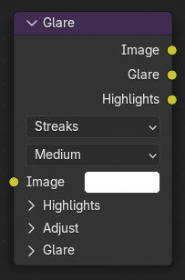

Glare Node¶

Glare Node nâng cao các vùng sáng của một ảnh bằng cách thêm các hiệu ứng như lens flare, bloom và fog glow. Nó mô phỏng cách ánh sáng tương tác với ống kính, tạo các vùng sáng và phản chiếu chân thực hoặc mang tính nghệ thuật.
Inputs¶
- Image
Đầu vào màu chuẩn.
- Glare Type
Xác định loại hiệu ứng glare được áp lên ảnh.
- Bloom:
Mô phỏng quầng sáng mềm quanh các vùng sáng do ánh sáng tán xạ trong mắt và ống kính camera.
- Ghosts:
Tạo nhiều artifact glare chồng lấn lên nhau, giống phản xạ ống kính hoặc quầng sáng mờ.
- Streaks:
Tạo các vệt sáng bức xạ từ các vùng highlight, thường được dùng để mô phỏng lens flare.
- Fog Glow:
Mô phỏng quầng sáng mềm quanh các vùng sáng do ánh sáng tán xạ trong mắt và ống kính camera. Loại glare này là phiên bản chính xác hơn về mặt vật lý của Bloom, tạo quầng sáng mềm hơn, chân thực hơn với cái giá là thời gian tính toán tăng.
- Simple Star:
Tương tự Streaks, nhưng tạo hiệu ứng glare hình ngôi sao đơn giản hơn.
- Sun Beams:
Mô phỏng hiệu ứng ánh sáng sáng bị tán xạ trong một môi trường (Crepuscular Rays). Hiện tượng này có thể được tạo bởi các renderer, nhưng volumetric lighting đầy đủ là cách tiếp cận khá vất vả và mất nhiều thời gian render.
- Kernel:
Áp dụng một bộ lọc tích chập (convolution) tùy chỉnh dùng một kernel được định nghĩa bằng số hoặc từ một ảnh. Chế độ này cho phép tạo các hiệu ứng glare hay khuếch tán do người dùng định nghĩa bằng cách chỉ định hình dạng và phân bố cường độ của kernel.
- Quality
Điều khiển độ phân giải mà hiệu ứng glare được xử lý. Điều này có thể hữu ích để tiết kiệm thời gian render khi chỉ render xem trước.
- High:
Xử lý ở độ phân giải đầy đủ cho chất lượng tốt nhất.
- Medium:
Dùng độ phân giải thấp hơn để giảm thời gian tính toán.
- Low:
Xử lý nhanh nhất nhưng chi tiết thấp hơn.
Highlights¶
- Threshold
Xác định luminance tối thiểu để một vùng đóng góp vào hiệu ứng glare. Giá trị thấp hơn bao gồm nhiều vùng hơn, trong khi giá trị cao hơn giới hạn glare chỉ ở các vùng sáng nhất.
- Smoothness
Điều khiển mức độ dần dần khi các pixel chuyển vào hiệu ứng glare. Giá trị cao hơn tạo việc trích xuất highlight mượt hơn.
Clamp¶
Kẹp các highlight sáng do đầu vào Maximum định nghĩa.
Điều này có thể giúp tạo hiệu ứng bloom trông đồng đều hơn khi có sự biến thiên luminance lớn.
- Maximum
Kẹp cường độ của các highlight về giá trị này.
Adjust¶
- Strength
Điều chỉnh cường độ tổng thể của hiệu ứng glare. Giá trị lớn hơn 1 làm tăng luminance của glare, trong khi giá trị nhỏ hơn 1 trộn glare với ảnh gốc.
- Saturation
Thay đổi độ bão hòa màu của hiệu ứng glare.
- Tint
Nhuộm màu cho hiệu ứng glare, cho phép có các highlight mang màu.
Glare¶
- Kích thước Bloom Fog Glow Sun Beams
Xác định mức lan tỏa tương đối của hiệu ứng trên ảnh. Giá trị 1 khiến hiệu ứng phủ toàn ảnh, còn 0.5 giới hạn ở một nửa, v.v.
- Số vệt Streaks
Số vệt sáng bức xạ từ các highlight.
- Góc vệt Streaks
Góc mà vệt đầu tiên tạo với trục ngang.
- Iterations Ghosts Streaks Simple Star
Số ghost cho glare loại Ghost, hoặc chất lượng và độ lan tỏa của glare với các loại Streaks và Simple Star.
- Điều biến màu Ghosts Streaks
Đưa vào các biến thiên màu tinh tế, mô phỏng hiệu ứng tán sắc màu.
- Fade Streaks Simple Star
Cường độ mờ dần của các vệt sáng.
- Diagonal Simple Star
Xoay các vệt Simple Star 45° để có hoa văn khác.
- Vị trí mặt trời Sun Beams
Điểm nguồn của các tia, tính theo hệ số của kích thước ảnh.
- Jitter Sun Beams
Lượng jitter đưa vào khi tính toán các tia; jitter cao hơn có thể nhanh hơn nhưng có thể cho kết quả nhiễu hạt hoặc ồn.
- Kiểu dữ liệu kernel Kernel
Xác định cách kernel được định nghĩa:
- Float:
Một kernel số được định nghĩa bởi socket đầu vào Kernel.
- Color:
Một ảnh màu đầy đủ được dùng làm kernel, cho phép các mẫu lọc phức tạp hơn
- Kernel Kernel
Khi kiểu Float được chọn, đầu vào này định nghĩa các giá trị kernel dạng số. Khi kiểu Color được chọn, có thể nối một đầu vào ảnh để cung cấp kernel tích chập dựa trên thang độ xám hoặc màu.
Outputs¶
- Image
Ảnh cuối cùng với glare đã tạo được cộng thêm.
- Glare
Hiệu ứng glare đã tạo được tách riêng khỏi ảnh đầu vào. Hữu ích cho compositing hoặc điều chỉnh thêm.
- Highlights
Các vùng sáng được trích xuất dùng để tạo hiệu ứng glare. Có thể được dùng để tinh chỉnh glare hoặc làm nền cho các hiệu ứng tùy chỉnh.
Gizmos¶
Node Glare cung cấp một gizmo tương tác trong Node Editor. Để dùng nó, hãy bật Active Node Gizmo và chọn node Glare.
Với loại Sun Beams, một gizmo hình chữ thập xuất hiện trong phần xem trước ảnh để thiết lập Sun Position.
Ví dụ¶
Sun Beams¶
Thường thì bước đầu tiên là xác định vùng phát ra các tia. Trong thế giới thực, ánh sáng khuếch tán phản chiếu từ các bề mặt sẽ không đóng góp vào hiện tượng tán xạ này, nên cần được loại khỏi dữ liệu đầu vào. Các cách khả dĩ để đạt điều này là:
Một ảnh hoàn toàn tách biệt làm nguồn sáng.
Tinh chỉnh độ sáng/tương phản để chỉ giữ lại các vùng sáng nhất.
Làm dịu các màu shadow và midtone, cách này linh hoạt hơn một chút.
Dùng mask để kiểm soát tuyệt đối.
Sau khi tạo sun beams từ ảnh nguồn sáng như vậy, chúng có thể được chồng lên ảnh gốc. Thường thì một Mix node "Add" đơn giản là đủ, và đúng về mặt vật lý vì ánh sáng tán xạ được cộng vào kết quả cuối cùng.